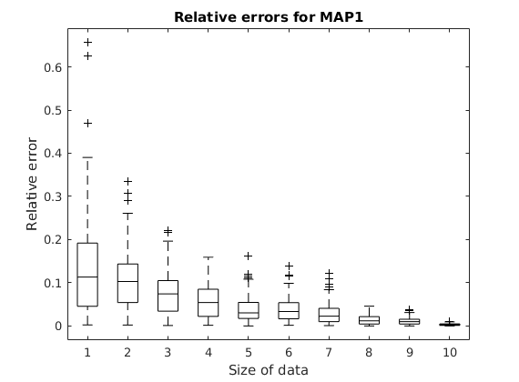
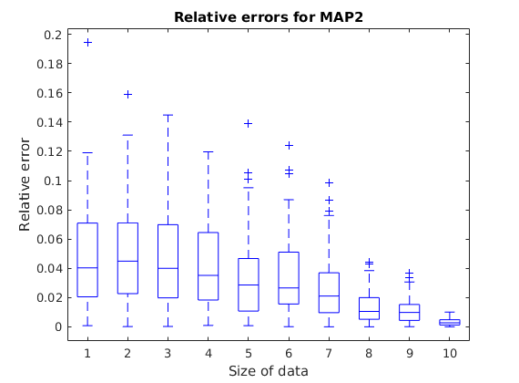

Contents
Initialize variables
clear; clc; close all; rng(1); N_list = [5, 10, 20, 40, 60, 80, 100, 500, 1000, 10000]; M = 100; % For a Gaussian with known sigma % MLE of mean = sample mean var_pr1 = 1; mu_data = 10; var_data = 16; mu_pr1 = 10.5; err_MLE = zeros(M,length(N_list)); err_MAP1 = zeros(M,length(N_list)); err_MAP2 = zeros(M,length(N_list));
Loop through the input
for iter = 1:length(N_list) N = N_list(iter); sample_var = var_data / N; for i = 1:M
Draw data samples
X = (randn(N, 1) * 4) + 10;
Calculate MLE
For Guassian, MLE of mean with known sigma will be the sample mean
sample_mean = mean(X);
Calculate the estimate of MAP1
For a Gaussian Prior, The posterior will be a gaussian, with mean and variance as discussed in the lecture.
gaussian_mu = ((sample_mean*var_pr1)+(mu_pr1*sample_var))/(sample_var + var_pr1);
Calulate the estimate of MAP2
In this case, the Posterior will be a refined Gaussian, truncated about the mean.
if(gaussian_mu < 9.5) trunc_gauss = 9.5; elseif(gaussian_mu > 11.5) trunc_gauss = 11.5; else trunc_gauss = gaussian_mu; end
Update errors in the matrices
err1 = abs(sample_mean - mu_data)/mu_data;
err2 = abs(gaussian_mu - mu_data)/mu_data;
err3 = abs(trunc_gauss - mu_data)/mu_data;
err_MLE(i, iter) = err1;
err_MAP1(i, iter) = err2;
err_MAP2(i, iter) = err3;
end end
Plot the data!
figure(1); boxplot(err_MLE, 'COLOR', 'k', 'Symbol', 'k+'); hold on; boxplot(err_MAP1, 'COLOR', 'b', 'Symbol', 'b+'); hold on; boxplot(err_MAP2, 'COLOR', 'm', 'Symbol', 'm+'); hold on; xlabel('Size of data'); ylabel('Relative error'); title('Comparison between relative errors'); figure(2); boxplot(err_MLE, 'COLOR', 'k', 'Symbol', 'k+'); hold on; xlabel('Size of data'); ylabel('Relative error'); title('Relative errors for MLE'); figure(3); boxplot(err_MAP1, 'COLOR', 'b', 'Symbol', 'b+'); hold on; xlabel('Size of data'); ylabel('Relative error'); title('Relative errors for MAP1'); figure(4); boxplot(err_MAP2, 'COLOR', 'm', 'Symbol', 'm+'); hold on; xlabel('Size of data'); ylabel('Relative error'); title('Relative errors for MAP2'); 